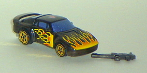
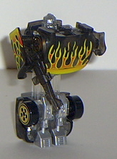
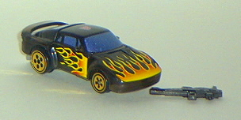
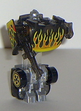
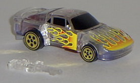
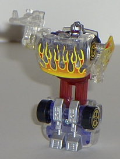

 
Size : Spychanger (comes packaged individually)
Color Scheme : Clear plastic, dark sparkly blue, yellow, transparent black, and some red, silver, black, and chrome gold
Rating : 4.2
Vehicle mode is a sportscar.
Like the other Wave 1 Spychangers, if there wasn't an Autobot symbol on
the top of this car, I would have sworn that this was a Hot Wheels car.
It's about the same size as one, and has the same kind of wheels. This
mode is pretty nice-looking, especially with the nice fire detailing on
the front and sides. Hot Shot's robot mode feet are a bit visible from
a rear view of the car, but it's still pretty minor. The thing that really
bugs me about this mode, is that, like the other Wave 1 Spychangers, the
gun is not storable in the vehicle mode. And it really ticks me off that
I need to get a separate container to put guns in whenever I want to leave
Hot Shot in vehicle mode. It could have been easily made storable on the
bottom, too, which makes me even more frustrated. Still, this is a nice-looking
car, especially for such a cheap price.
Hot Shot's transformation
is the same as the other Wave 1 Spychangers- seperate the two car halves
slightly to reveal the upper leg extensions, pull the robot arms out, flip
the hood down to reveal the robot head, and you're done. I don't really
like the overall look of the Wave 1 Spychanger's robot modes, and Hot Shot
is no exception. First off, the arms can only move at the shoulders in
this mode, and that's it. The legs are all molded into one piece, so there
goes all the leg articulation right there. This limits playability severely
in this mode. Hot Shot's robot head is also pretty small proportionally,
and his chest sticks out waaay too much for my liking- more so than most
of the other Spychangers, in fact. Although the black, yellow, silver,
and white colors look nice together, I don't like the clear plastic used
for the upper legs. It just makes it look like Hasbro doesn't want his
upper legs to exist; they want to make believe that Hot Shot's two separate
pieces, with one piece "floating" in mid-air. I realize that this isn't
the case, but it still was a rather bad color choice for any appendage.
The arms are also very small proportionally, and they're just molded on
the inside of the car doors. Rather cheap, if you ask me.
Although his vehicle
mode's alright, Hot Shot's robot mode bites. It just looks doofy. My least
favorite of the Spychangers, despite the cool "fire" detailng.
 Hot
Shot (2002 Version, Transparent; KB Toys Exclusive)
Hot
Shot (2002 Version, Transparent; KB Toys Exclusive)


Size
: Spychanger (comes packaged
individually)
Color Scheme
: Clear plastic, dark
sparkly blue, yellow, transparent black, and some red, silver, black, and
chrome gold
Rating
: 4.2
To everyone's surprise, a KB Toys Exclusive, transparent version of Hot Shot came out in summer 2002, packaged individually (and with tech specs on the back this time). At first glance, at least in his vehicle mode, Hot Shot doesn't look any different than in his previous incarnation. Upon closer inspection, however, one can see that his seemingly solid black is actually a very dark transparent black. Hold it up to the light and it becomes much more obvious. Also, the white plastic available on his legs and under his car-chest in robot mode is now clear. The clear plastic from his original incarnation has, obviously, stayed clear. Other than that, Hot Shot's exactly like his previous version. Although I like the smoky black plastic slightly better than the solid black plastic of the previous version, he's really not worth getting if you already have the original, since the two are so similar.
 Hot
Shot (2003 Version, Transparent; KB Toys Exclusive)
Hot
Shot (2003 Version, Transparent; KB Toys Exclusive)


Size
: Spychanger (comes packaged
individually)
Color Scheme
: Clear plastic, transparent
blue, transparent cherry red, black, and some yellow, red, silver, and
chrome gold
Rating
: 3.9
This time around, Hot
Shot's color scheme is pretty much the polar opposite of what it was earlier.
Where there was black plastic, now there's clear plastic. I have to say,
this doesn't look quite as good in the car mode as the black- having a
see-through clear car, especially while the windows remain opaque, just
ain't right. Not to mention that the flame patterns just seem to mesh a
little better with the black. However, in robot mode, the transparent red
and blue help out the color contrast a little. Although clear plastic hands
aren't up my alley, either.
A better color would
have been more suitable for Hot Shot- being made up mostly of see-through
plastic when you're a sportscar just doesn't seem right, for some reason.
My least favorite version of the Hot Shot spychangers.
Review by Beastbot